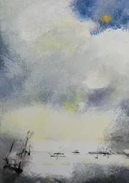

Jenny Armour

Yn bennaf haniaethol, mae fy ngwaith hefyd yn cynrychioli Ynys Môn a Gogledd Cymru.
Rwyf wrth fy modd â’r golau, yr awyr â’r môr a gobeithio y byddaf yn adlewyrchu hyn yn fy mheintiadau, boed yn fawr ar gynfas neu’n fach mewn ffrâm/heb ffrâm. Prisiau fforddiadwy!
Primarily abstract my work is also representational of Anglesey and North Wales.
I love the light, big sky, big sea and I hope I reflect this in my paintings whether large on canvas or small framed/unframed. Affordable pricing!
01248 853772 / 07500 289744
jennyarmour.gorslwyd@hotmail.co.uk
Facebook: Jenny Armour Anglesey Artist
GORSLWYD, SHEPHERD’S HILL, TYN-Y-GONGL, LL74 8NS
O Benllech cymerwch B5025. Ar ôl 1.5 milltir trowch i’r chwith B5110 tuag at Llangefni.
Parhewch am ychydig dros filltir, trowch i’r chwith i fyny’r bryn gan ddilyn arwyddion.
O Llangefni cymerwch B5110 am 6.2 milltir (Marianglas). Trowch i’r dde.
From Benllech take B5025. After 1.5 miles turn left B5110 for Llangefni.
Continue for just over a mile, turn left up hill following signs.
At Llangefni take B5110 for 6.2 miles (Marianglas). Turn right.